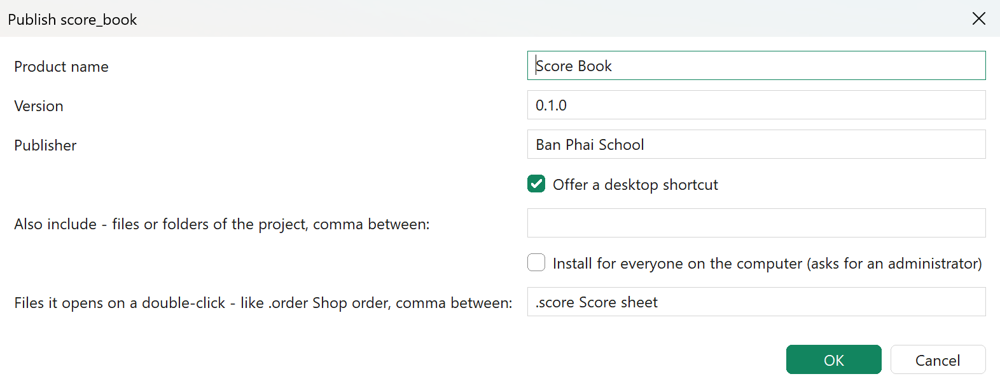
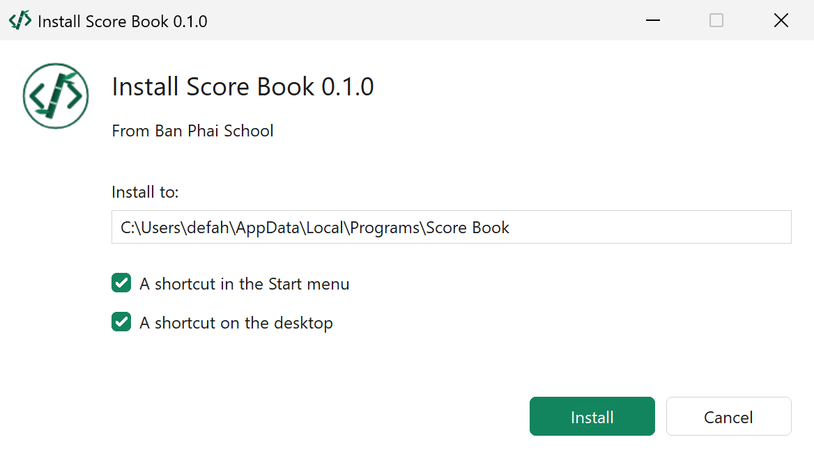

ทำตัวติดตั้ง (Publish)
เขียนโปรแกรมเสร็จแล้วอยากให้เพื่อน ครู หรือลูกค้าใช้ ใช้คำสั่ง Publish ได้เลย Phai Studio จะ build โปรแกรมแบบ Release แล้วทำ setup.exe ไฟล์เดียวให้ คนที่ได้ไปแค่ดับเบิลคลิกก็ติดตั้งได้ มีทางลัดใน Start menu และถอนการติดตั้งได้จาก Settings เหมือนโปรแกรมทั่วไป
ก่อนเริ่ม
- โปรแกรมต้อง build ผ่านก่อน ลองกด F5 ให้รันได้ไม่มี error
- อยากให้โปรแกรมมีไอคอนของตัวเอง: เมนู Project > Properties ช่อง "ไอคอนของไฟล์โปรแกรม" ใส่ไฟล์
.icoที่อยู่ในโปรเจกต์ ไอคอนนี้จะขึ้นที่ไฟล์โปรแกรม ทางลัด และตัวติดตั้งด้วย
ขั้นตอน
- เปิดฟอร์มของโปรเจกต์ แล้วเลือกเมนู Build > Publish ชื่อโปรเจกต์... (หน้าจอภาษาไทย: สร้างโปรแกรม > เผยแพร่...)
- กรอกหน้าต่างที่ขึ้นมา (ดูตารางข้างล่าง) แล้วกด OK
- Phai Studio build แบบ Release ซึ่งช้ากว่าปกติ ครั้งแรกอาจใช้เวลาหลายนาที ดูความคืบหน้าได้ที่แท็บ Output
- เสร็จแล้วแท็บ Output บอกชื่อไฟล์และขนาด และเปิดโฟลเดอร์
publishของโปรเจกต์ให้

| ช่อง | ใส่อะไร |
|---|---|
| Product name | ชื่อโปรแกรมที่ผู้ใช้เห็น ใช้เป็นชื่อใน Start menu ใน Settings > Apps ชื่อโฟลเดอร์ที่ติดตั้ง และชื่อไฟล์ตัวติดตั้ง |
| Version | รุ่นของโปรแกรม เริ่มจาก version ใน Cargo.toml แจกใหม่ทุกครั้งควรเพิ่มเลข เช่น 0.1.0 → 0.1.1 ให้รู้ว่าเป็นรุ่นไหน |
| Publisher | ชื่อผู้ทำ เช่น ชื่อตัวเอง โรงเรียน หรือบริษัท ขึ้นในหน้าติดตั้งและใน Settings > Apps |
| Offer a desktop shortcut | ติ๊ก = หน้าติดตั้งเสนอทางลัดบนเดสก์ท็อปไว้ให้ (ผู้ใช้เอาออกได้ตอนติดตั้ง) |
| Also include | ไฟล์หรือโฟลเดอร์ในโปรเจกต์ที่ต้องไปกับโปรแกรม คั่นด้วยจุลภาค เช่น pictures, data/config.txt ค่าเริ่มต้นคือรูปที่ฟอร์มใช้ |
| Install for everyone | ไม่ติ๊ก (ค่าเริ่มต้น) = ติดตั้งให้ผู้ใช้คนนั้นคนเดียว ไม่ต้องใช้สิทธิ์ผู้ดูแลเครื่อง ติ๊ก = ติดตั้งลง Program Files ให้ทุกคนในเครื่อง ตอนติดตั้งจะขอสิทธิ์ผู้ดูแล |
| Files it opens on a double-click | ไฟล์ที่โปรแกรมเปิดได้ เขียนนามสกุลตามด้วยชื่อที่ให้ Explorer แสดง คั่นด้วยจุลภาค เช่น .score Score sheet, .exam (ไม่ใส่ชื่อ = "ไฟล์ ชื่อโปรแกรม") เว้นว่างได้ ดูหัวข้อ ไฟล์ของโปรแกรมเอง |
คำตอบทั้งหมดถูกจำไว้ในไฟล์ phai-publish.txt ข้างโปรเจกต์ ครั้งหน้าเปิด Publish แล้วกด OK ได้เลย
ได้อะไรมา
ในโฟลเดอร์ publish ของโปรเจกต์มีสองอย่าง:
| ไฟล์ | ใช้อย่างไร |
|---|---|
Score-Book-0.1.0-setup.exe | ตัวติดตั้งไฟล์เดียว ส่งให้คนอื่นทางไลน์ อีเมล แฟลชไดรฟ์ หรือวางบนเว็บ |
Score-Book-0.1.0-portable\ | โฟลเดอร์โปรแกรมพร้อมไฟล์ที่ใส่เพิ่ม คัดลอกไปที่ไหนก็เปิดได้เลยโดยไม่ต้องติดตั้ง |
ตัวติดตั้งทำอะไรบนเครื่องผู้ใช้

- ถามที่ติดตั้ง ค่าเริ่มต้นคือ
%LOCALAPPDATA%\Programs\ชื่อโปรแกรม(ถ้าเลือก Install for everyone จะเป็นProgram Files) - ทำทางลัดใน Start menu และบนเดสก์ท็อป (ผู้ใช้ติ๊กออกได้)
- ลงชื่อโปรแกรมใน Settings > Apps พร้อมตัวถอนการติดตั้ง (
uninstall.exeในโฟลเดอร์ที่ติดตั้ง) ถอนแล้วไฟล์ ทางลัด และรายชื่อใน Apps หายไปหมด
ติดตั้งแบบไม่ถามอะไรเลย (เช่น ลงให้หลายเครื่องด้วยสคริปต์) ใช้สวิตช์เหล่านี้ได้:
| สวิตช์ | ทำอะไร |
|---|---|
/S | ติดตั้งเงียบ ๆ ไม่ขึ้นหน้าต่าง |
/D=โฟลเดอร์ | ติดตั้งลงโฟลเดอร์นี้ |
/NOSHORTCUTS | ไม่ทำทางลัด |
Score-Book-0.1.0-setup.exe /S /D=D:\Apps\Score Bookไฟล์ของโปรแกรมเอง (ดับเบิลคลิกแล้วเปิด)
โปรแกรมที่บันทึกงานเป็นไฟล์ของตัวเอง เช่น ใบคะแนน .score ใส่นามสกุลในช่อง Files it opens on a double-click แล้วตัวติดตั้งจะทำให้:
- ไฟล์นามสกุลนั้นมีไอคอนของตัวเองใน Explorer: ถ้าในโปรเจกต์มีไฟล์
score.ico(ชื่อเดียวกับนามสกุล) จะใช้รูปนั้นและใส่ไปกับโปรแกรมให้เอง ถ้าไม่มีจะใช้ไอคอนของโปรแกรม - ดับเบิลคลิกไฟล์แล้วเปิดโปรแกรม โดยส่งที่อยู่ของไฟล์มาให้
- ถ้าเครื่องนั้นมีโปรแกรมอื่นเปิดนามสกุลนี้อยู่แล้ว ตัวติดตั้งจะไม่แย่ง แต่ใส่โปรแกรมเราไว้ในเมนู Open with ให้
- ถอนการติดตั้งแล้ว ทุกอย่างที่เพิ่มไว้หายไปด้วย ของโปรแกรมอื่นไม่ถูกแตะ
นามสกุลที่ Windows ใช้เอง (.exe .dll .bat .lnk ...) ใส่ไม่ได้ Phai Studio จะบอกและให้แก้ใหม่
โปรแกรมรู้ว่าถูกเปิดด้วยไฟล์อะไรจาก std::env::args() ตัวที่สอง เช่น อ่านไฟล์ตอนฟอร์มขึ้น (event Shown):
use phai_ui::form::{message_box, MessageBoxButtons, MessageBoxIcon};
fn main_window_shown(&mut self, ui: &MainWindowUi) {
// ดับเบิลคลิก ใบคะแนน.score → args = ["score_book.exe", "D:\\งาน\\ใบคะแนน.score"]
if let Some(path) = std::env::args().nth(1) {
match std::fs::read_to_string(&path) {
Ok(text) => ui.notes.set_text(&text),
Err(e) => {
message_box(ui.hwnd, &format!("เปิด {path} ไม่ได้: {e}"), "Score Book", MessageBoxButtons::Ok, MessageBoxIcon::Error);
}
}
}
}ก่อนแจกจริง ควรรู้
- หน้าจอเตือนของ Windows: ตัวติดตั้งยังไม่ได้เซ็นโค้ด (code signing) ครั้งแรกที่เปิด Windows อาจขึ้น "Windows protected your PC" บอกผู้ใช้ให้กด More info แล้ว Run anyway
- Visual C++ runtime: โปรแกรมที่ build ด้วย Rust บน Windows ใช้ไฟล์
VCRUNTIME140.dllของ Microsoft ซึ่งเครื่องส่วนใหญ่มีอยู่แล้ว ถ้าเครื่องไหนเปิดโปรแกรมแล้วขึ้นว่าหาVCRUNTIME140.dllไม่เจอ ให้ติดตั้ง Microsoft Visual C++ Redistributable (x64) จากเว็บของ Microsoft (ฟรี) ก่อน - ลองบนเครื่องอื่นก่อน: ติดตั้งบนเครื่องที่ไม่เคยลง Phai Studio หรือ Rust เพื่อดูว่าไม่ขาดไฟล์อะไร โดยเฉพาะไฟล์ที่ต้องใส่ใน Also include